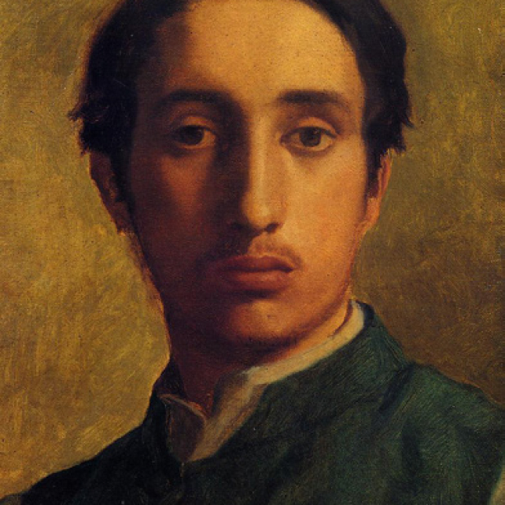

Edgar Degas
1834.7.19 ~ 1917.9.27

He is a famous French painter and sculptor. Although Degas is regarded as one of the founders of Impressionism, he preferred to be called a realist and did not paint outdoors, as many Impressionist painters did.